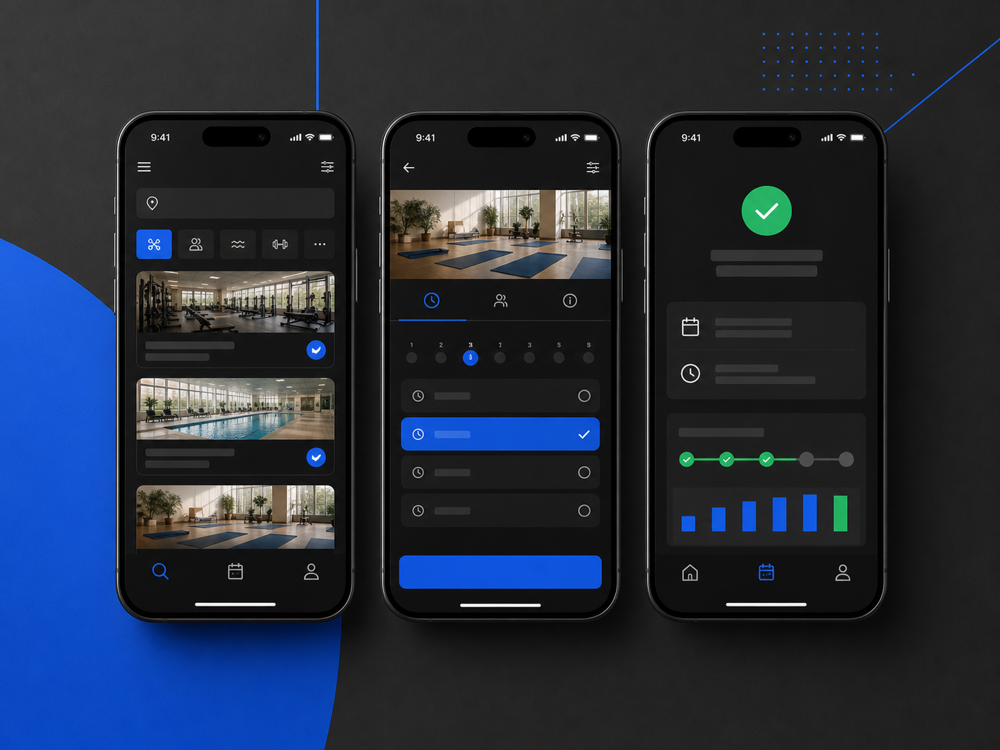

01 · Selected work
先看設計如何解決問題。
四個案例聚焦不同能力：產品流程、研究洞察、設計系統與複雜工作台。每個案例都說明限制、判斷與成果衡量方式。

02 · Capabilities
設計是核心，技術讓它真正發生。
依專案需求切換研究、設計系統、視覺與實作協作，而不是把工具清單當成能力本身。
01
Product Design
梳理需求、資訊架構、流程與互動，透過原型和測試降低開發前的不確定性。
- UX strategy & research
- Web／App UI design
- Prototype & usability
02
Visual Systems
建立能跨頁面與團隊延伸的視覺語言，讓品牌、介面和內容保持一致。
- Design system
- Responsive framework
- Brand & campaign visual
03
Front-end & AI
理解 HTML、CSS、JavaScript 與生成式 AI，讓設計更容易驗證、溝通並交付。
- Design-to-code collaboration
- Interactive prototype
- AI-assisted workflow
03 · About
跨越產品、視覺與技術的設計者。
我是 Horace，一位專注數位產品與網頁體驗的 Senior UI/UX & Web Designer。
十多年來參與媒體、金融與數位產品專案。我擅長在商業需求、使用者問題與技術限制之間建立共同語言，從視覺方向、互動流程一路協作到響應式實作。
近年也把生成式 AI 納入研究、視覺探索與原型流程；重點不是追逐工具，而是更快提出可討論、可驗證的方案。
查看完整履歷04 · Experience
從品牌視覺走向完整產品體驗。
2020.05 — Present
Xtars Live · 藝想科技
UI/UX Designer
主導網站與 App 的介面及體驗設計，建立可持續維護的產品規範，並與產品及工程團隊協作落地。
2019.09 — 2020.03
E.SUN Bank · 玉山銀行
Senior Web Designer
負責活動與響應式網站設計，並主導數位品牌 e.Fingo 的 CI 視覺系統。
2018.06 — 2019.05
Osaka · Japan
Working Holiday & Barista
累積跨文化服務與協作經驗，於大阪取得 JLPT N3，拓展語言與設計視野。
2013.07 — 2018.04
PIXNET · 優像數位媒體
Senior Web Designer
參與品牌活動、部落格產品與大型合作專案，建立視覺規範並持續改善內容體驗。
05 · More work
更多專案與能力切面。
快速瀏覽其他專案類型。需要完整內容時，我可以依面談或合作需求補充細節。
2025Mobile UX
預約流程優化
搜尋、選擇與確認流程
2025UX Research
新手啟用診斷
首次使用阻礙與產品假設
2024Design System
表單與錯誤規範
輸入、驗證與錯誤訊息
2024Data UI
資料洞察介面
可比較、可追蹤的洞察工作區
2024Web Experience
內容管理工具
草稿、審核與發布協作
2024UX Research
客服問題地圖
客服紀錄分類與改善優先序
2023Responsive
響應式版型規則
內容密度、斷點與元件重排
2023Product Design
帳戶安全中心
風險分級與安全設定引導
06 · Contact